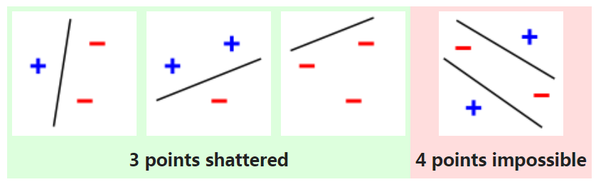

第五章 机器学习基础
- 学习算法
- 容量、过拟合和欠拟合
- 超参数和验证集
- 估计、偏差和方差
- 最大似然估计
- 贝叶斯统计
- 监督学习算法
- 无监督学习算法
- 随机梯度下降
- 构建机器学习算法
- 促使深度学习发展的挑战
5.1 学习算法
- 机器学习算法是一种能够从数据中学习的算法。
- 所谓的“学习”是什么意思呢？
- Mitchell (1997)提供了一个简洁的定义: “对于某类任务$T$和性能度量 $P$，一个计算机程序被认为可以从经验$E$中学习是指，通过经验 $E$改进后，它在任务$T$上由性能度量$P$衡量的性能有所提升。”
- 任务$T$，性能度量$P$，经验$E$
任务 $T$
- 通常机器学习任务定义为机器学习系统应该如何处理样本(example)。
- 样本是指我们从某些希望机器学习系统处理的对象或事件中收集到的已经量化的特征(feature)的集合。
- 例如，一张图片的特征通常是指这张图片的像素值。
- 常见的任务如:
- 分类, 指定输入属于$k$类中的哪一种
- 回归, 对给定输入预测数值
$f:\mathbb{R}^n \to \{1,\dots,k\}$
$f:\mathbb{R}^n \to \mathbb{R}$
性能度量 $P$
- 为了评估机器学习算法的能力，我们必须设计其性能的定量度量。 通常性能度量$P$是特定于系统执行的任务$T$而言的。
- 对于分类任务，我们通常度量模型的准确率(accuracy)。
- 通常我们更加关注机器学习算法在未观测数据上的性能，因为这将决定其在实际应用中的性能。
- 为此我们使用与训练集不相交的测试集数据来进行系统性能评估。
经验 $E$
- 根据学习过程中可以获得的经验的不同，机器学习算法可以大致分类为无监督(unsupervised)算法和监督(supervised)算法。
- 无监督学习算法学习出一个数据集上有用的结构性质。比如密度估计和聚类。
- 不同于无监督，监督学习算法的数据集中的样本都有一个标签或目标。
- 大致说来，无监督学习试图显式或隐式地学习出概率分布$p(\mathbf{x})$，或者是该分布一些有意思的性质；而监督学习观察随机向量$\mathbf{x}$及其相关联的值或向量$\mathbf{y}$，然后从$\mathbf{x}$预测$\mathbf{y}$，通常是估计$p(\mathbf{y}\mid\mathbf{x})$
经验 $E$
- 无监督学习和监督学习不是严格定义的术语。它们之间的界线通常是模糊的。
- 例如，概率的链式法则表明对于向量$\mathbf{x}\in\mathbb{R}^n$，联合分布可以分解成：
- 该分解意味着我们可以将无监督学习问题拆分成$n$个监督学习问题。
- 反之，我们求解监督学习问题$p(y\mid\mathbf{x})$ 时，也可以使用传统的无监督学习策略学习联合分布$p(\mathbf{x},y)$，然后推断
$p(\mathbf{x}) = \prod_{i=1}^n p(\mathrm{x}_i \mid \mathrm{x}_1,\dots,\mathrm{x}_{i-1})$
$p(y\mid\mathbf{x}) = \frac{p(\mathbf{x},y)}{\sum_{y'}p(\mathbf{x},y')}$
设计矩阵
- 设计矩阵的每一行包含一个不同的样本。每一列对应不同的特征。
- 例如，一个包含150个样本，每个样本有4个特征的数据集可以被表示为设计矩阵$\boldsymbol{\mathit{X}}\in\mathbb{R}^{150\times 4}$。
- 当样本维度不相同时，可以表示成$m$个元素的集合：$\{\boldsymbol{\mathit{x}}^{(1)},\boldsymbol{\mathit{x}}^{(2)},\dots,\boldsymbol{\mathit{x}}^{(m)}\}$。
- 在监督学习中，设计矩阵有一个对应的标签向量$\boldsymbol{\mathit{y}}$。
示例：线性回归
- 在线性回归问题中，我们将向量$\boldsymbol{\mathit{x}}\in\mathbb{R}^n$ 作为输入，预测标量$y\in\mathbb{R}$ 作为输出，$\boldsymbol{\mathit{w}}\in\mathbb{R}^n$ 是参数向量。
- 任务$T$: 从$\boldsymbol{\mathit{x}}$ 预测$y$。
- 假设我们有$m$个输入样本组成的测试集，我们将输入的设计矩阵记作$\boldsymbol{\mathit{X}}^{\text{(test)}}$，回归目标向量记作$\boldsymbol{\mathit{y}}^{(\text{test})}$。
- 定义性能度量$P$ 为均方误差(mean squared error):
- 目标：减少$\text{MSE}_{\text{test}}$ 以改进权重$\boldsymbol{\mathit{w}}$。一种直观方式是最小化训练集$(\boldsymbol{\mathit{X}}^{(\text{train})},\boldsymbol{\mathit{y}}^{(\text{train})})$ 上的均方误差，即$\text{MSE}_{\text{train}}$
$\hat{y} = \boldsymbol{\mathit{w}}^\top \boldsymbol{\mathit{x}} $
$\text{MSE}_{\text{test}} = \frac{1}{m} \sum_i ( \hat{\boldsymbol{\mathit{y}}}^{(\text{test})} - \boldsymbol{\mathit{y}}^{(\text{test})})_i^2 = \frac{1}{m} ||{ \hat{\boldsymbol{\mathit{y}}}^{(\text{test})} - \boldsymbol{\mathit{y}}^{(\text{test})}}||_2^2$
示例：线性回归
$\nabla_{\boldsymbol{\mathit{w}}} \text{MSE}_{\text{train}} = \boldsymbol{0}$
$\Rightarrow \nabla_{\boldsymbol{\mathit{w}}} \frac{1}{m} ||{ \hat{\boldsymbol{\mathit{y}}}^{(\text{train})} - \boldsymbol{\mathit{y}}^{(\text{train})}}||_2^2 = \boldsymbol{0}$
$\Rightarrow \frac{1}{m} \nabla_{\boldsymbol{\mathit{w}}} ||{ \boldsymbol{\mathit{X}}^{(\text{train})}\boldsymbol{\mathit{w}} - \boldsymbol{\mathit{y}}^{(\text{train})}}||_2^2 = \boldsymbol{0}$
$\Rightarrow \nabla_{\boldsymbol{\mathit{w}}} \left( \boldsymbol{\mathit{X}}^{(\text{train})}\boldsymbol{\mathit{w}} - \boldsymbol{\mathit{y}}^{(\text{train})} \right)^\top \left( \boldsymbol{\mathit{X}}^{(\text{train})}\boldsymbol{\mathit{w}} - \boldsymbol{\mathit{y}}^{(\text{train})} \right) = \boldsymbol{0}$
$\Rightarrow \nabla_{\boldsymbol{\mathit{w}}} \left(\boldsymbol{\mathit{w}}^\top \boldsymbol{\mathit{X}}^{(\text{train})\top}\boldsymbol{\mathit{X}}^{(\text{train})}\boldsymbol{\mathit{w}} - 2\boldsymbol{\mathit{w}}^\top\boldsymbol{\mathit{X}}^{(\text{train})\top} \boldsymbol{\mathit{y}}^{(\text{train})} + \boldsymbol{\mathit{y}}^{(\text{train})\top}\boldsymbol{\mathit{y}}^{(\text{train})}\right) = \boldsymbol{0}$
$ \Rightarrow 2\boldsymbol{\mathit{X}}^{(\text{train})\top}\boldsymbol{\mathit{X}}^{(\text{train})} \boldsymbol{\mathit{w}} - 2\boldsymbol{\mathit{X}}^{(\text{train})\top} \boldsymbol{\mathit{y}}^{(\text{train})} = \boldsymbol{0}$
$ \Rightarrow \boldsymbol{\mathit{w}} = \left(\boldsymbol{\mathit{X}}^{(\text{train})\top}\boldsymbol{\mathit{X}}^{(\text{train})} \right)^{-1} \boldsymbol{\mathit{X}}^{(\text{train})\top} \boldsymbol{\mathit{y}}^{(\text{train})}$
- 解满足上述形式的方程系统我们称为正规方程
- 线性回归模型通常包含截距$b$
- $b$通常也被称为仿射变换的偏置(bias)参数。
$\hat{y} = \boldsymbol{\mathit{w}}^\top \boldsymbol{\mathit{x}} + b$
5.2 容量、过拟合和欠拟合
- 在未观测到的数据上表现良好的能力被称为泛化(generalization)。
- 上一节中的线性回归示例本质上是一个基于训练集的优化问题，优化训练误差。
- 但我们真正关心的是泛化误差/测试误差。
$\frac{1}{m^{(\text{test})}} ||{\boldsymbol{\mathit{X}}^{(\text{test})}\boldsymbol{\mathit{w}} - \boldsymbol{\mathit{y}}^{(\text{test})}}||_2^2$
- 我们如何在只观察到训练集的情况下，影响算法在测试集上的表现？
-
统计学习理论中的假设：独立同分布假设(i.i.d. assumption)
- 每个数据集中的样本都是彼此相互独立的
- 且训练集和测试集是同分布的
- 我们将这个共享的潜在分布称为数据生成分布,记作$p(\boldsymbol{\mathit{x}},y)$
- 以上概率框架允许我们从数学上研究两种误差之间的关系
过拟合和欠拟合
-
机器学习算法的好坏由两个能力决定：
- 降低训练误差
- 缩小训练误差和测试误差的差距
- 欠拟合：模型不能在训练集上获得足够低的误差。
- 过拟合：训练误差和和测试误差之间的差距太大。
容量
-
通俗地讲，模型的容量是指其拟合各种函数的能力。
- 容量低的模型$\Rightarrow$欠拟合
- 容量高的模型$\Rightarrow$过拟合
-
一种控制训练算法容量的方法是选择假设空间。
- 例如：线性回归算法将关于其输入的所有线性函数作为假设空间。
- 广义线性回归算法的假设空间包括多项式函数。
$\hat{y} = b + \sum_{i=1}^n w_i x^i$
容量
- 当容量适合于所执行任务的复杂度和训练数据量时，算法通常会达到最佳效果。
- 下图比较了线性，二次和9次预测器拟合真实二次函数的效果。
- 模型函数族的选取决定了模型的表示容量。
- 由于优化算法不完美等限制因素，学习算法的有效容量可能小于模型族的表示容量。
下图反映了容量和误差之间的典型关系
容量
- 奥卡姆剃刀（Occam’s razor）。该原则指出，在同样能够解释已知观测现象的假设中，我们应该挑选“最简单”的那一个。
- Vapnik-Chervonenkis 维度（Vapnik-Chervonenkis dimension, VC）用于度量二元分类器的容量。当一个二元分类器可以任意标记$m$个不同点时，的$m$的最大值即为VC维度。 
- 贝叶斯误差（Bayes error）:从预先知道的真实分布$p(x,y)$预测而出现的误差。
没有免费午餐定理
- 没有免费午餐定理（no free lunch theorem）(Wolpert, 1996)表明，在所有可能的数据生成分布上平均之后，每一个分类算法在未事先观测的点上都有相同的错误率。没有一个机器学习算法总是比其他的要好。
- 机器学习研究的目标：
- 什么样的学习算法在我们关注的数据生成分布上效果最好 $\surd$
- 找一个通用学习算法 $\quad \quad \quad \quad \quad \quad \quad \quad \quad \quad \quad \quad \text{ }\times$
正则化
- 正则化是指我们修改学习算法，使其降低泛化误差而非训练误差。
- 一般地，正则化一个学习函数$f(x,\theta)$ 的模型，我们可以给代价函数添加被称为正则项（regularizer）的惩罚
- 加入权重衰减(正则项)的线性回归：
- 最小化训练集上的均方误差和正则项的和$J(\boldsymbol{\mathit{w}})$, 使原有线性回归偏好于$L^2$ 范数较小的权重。控制过拟合趋势。
$J(\boldsymbol{\mathit{w}}) = \text{MSE}_{\text{train}} + \lambda \boldsymbol{\mathit{w}}^\top \boldsymbol{\mathit{w}}$
正则化
- 真实函数是二次的，使用9阶多项式拟合。通过改变权重衰减的量来避免高阶模型的过拟合问题。
- 根据没有免费午餐定理，也没有最优的正则化形式。
- 深度学习中普遍的理念是大量任务也许都可以使用非常通用的正则化形式来有效解决。
5.3 超参数和验证集
超参数
- 大多数机器学习算法都有超参数，可以设置来控制算法行为。
- 多项式的次数、控制权重衰减程度的$\lambda$ 都是超参数。
- 通常一个参数因为太难优化会被设为超参数。
-
更多的情况是，该选项必须是超参数，因为它不适合在训练集上学习。
- 这适用于控制模型容量的所有超参数。
- 因为这些超参数总是趋向于最大可能的模型容量，导致过拟合。
超参数
- 我们使用验证集来解决超参数选择问题。
- 因为测试集不能以任何形式参与模型选择，必须要从训练数据中构建验证集。
- 通常，80% 的训练数据用于训练，20% 用于验证。
交叉验证
- 一个小规模的测试集意味着平均测试误差估计的统计不确定性。
- 重复在原始数据上随机分离出测试集的方法允许我们使用所有的样本估计平均测试误差。最常见的是k-折交叉验证（k-fold cross-validation）。

5.4 估计、偏差和方差
5.4.1 点估计
点估计
- 点估计试图为一些感兴趣的量提供单个最优预测。
- $\theta$ 表示模型的真实参数，$\hat{\theta}$ 表示点估计。
- 令$\{\boldsymbol{\mathit{x}}^{(1)},\dots,\boldsymbol{\mathit{x}}^{(m)}\}$是$m$个独立同分布（i.i.d.）的数据点。点估计函数是这些数据的任意函数：
$\hat{\boldsymbol{\theta}}_m = g(\boldsymbol{\mathit{x}}^{(1)}, \dots, \boldsymbol{\mathit{x}}^{(m)})$
函数估计
- 假设$\boldsymbol{\mathit{y}} = f(\boldsymbol{\mathit{x}}) + \boldsymbol{\epsilon}$，估计$\hat{f}$。
- 函数估计是函数空间的一个点估计。
5.4.2 偏差
- 判断点估计的表现。
- 估计的偏差定义：$\text{bias}(\hat{\boldsymbol{\theta}}_m) = \mathbb{E}(\hat{\boldsymbol{\theta}}_m) - \boldsymbol{\theta}$
- $\text{bias}(\hat{\boldsymbol{\theta}}_m)=\boldsymbol{0}$,估计量$\hat{\boldsymbol{\theta}}_m$是无偏的
- $\lim_{m\to\infty} \text{bias}(\hat{\boldsymbol{\theta}}_m)=\boldsymbol{0}$，估计量$\hat{\boldsymbol{\theta}}_m$是渐进无偏的
示例：伯努利分布
- 假设一组独立同分布样本$\{x^{(1)}, \dots , x^{(m)}\}$服从均值为$\theta$的伯努利分布。
- $\theta$的常用估计量是样本均值
$P(x^{(i)}; \theta) = \theta^{x^{(i)}} (1-\theta)^{(1 - x^{(i)})}$
$\hat{\theta}_m = \frac{1}{m} \sum_{i=1}^m x^{(i)}$
\begin{align} \text{bias}(\hat{\theta}_m) &= \mathbb{E}[\hat{\theta}_m] - \theta \\ &= \mathbb{E} \left[ \frac{1}{m} \sum_{i=1}^m x^{(i)} \right] - \theta \\ &= \frac{1}{m} \sum_{i=1}^m \mathbb{E} \left[x^{(i)} \right] - \theta \\ &= \frac{1}{m} \sum_{i=1}^m \sum_{x^{(i)} = 0}^1 \left( x^{(i)} \theta^{x^{(i)}} (1-\theta)^{(1-x^{(i)})} \right) - \theta \\ &= \frac{1}{m} \sum_{i=1}^m (\theta) - \theta \\ &= \theta - \theta = 0 \end{align}
$\quad \quad $故，$\hat{\theta}_m$是无偏的。
示例：高斯分布均值估计
- 一组独立同分布的样本$\{x^{(1)}, \dots , x^{(m)}\} $服从高斯分布。
- 高斯均值参数的的常用估计量是样本均值
$p(x^{(i)}) = \mathcal{N}(x^{(i)}; \mu, \sigma^2)$
$\hat{\mu}_m = \frac{1}{m} \sum_{i=1}^m x^{(i)}$
\begin{align} \text{bias} (\hat{\mu}_m) &= \mathbb{E}[ \hat{\mu}_m ] - \mu \\ &= \mathbb{E} \left[ \frac{1}{m} \sum_{i=1}^m x^{(i)} \right] - \mu \\ &= \left( \frac{1}{m}\sum_{i=1}^m \mathbb{E} \left[ x^{(i)} \right] \right) - \mu \\ &= \left( \frac{1}{m}\sum_{i=1}^m \mu \right) - \mu \\ &= \mu - \mu = 0 \end{align}
$\quad \quad \quad \quad$故，$\hat{\theta}_m$是无偏的。
示例：高斯分布方差估计
- 样本方差。
- 无偏样本方差。
$\hat{\sigma}_m^2 = \frac{1}{m} \sum_{i=1}^m \left( x^{(i)} - \hat{\mu}_m \right)^2$
$\tilde{\sigma}_m^2 = \frac{1}{m-1} \sum_{i=1}^m \left( x^{(i)} - \hat{\mu}_m \right)^2$
样本方差的期望
\begin{align} \mathbb{E} [ \hat{\sigma}_m^2 ] &= \mathbb{E} \left[ \frac{1}{m} \sum_{i=1}^m \left( x^{(i)} - \hat{\mu}_m \right)^2 \right] \\ &= \mathbb{E} \left[ \frac{1}{m} \sum_{i=1}^m \left( (x^{(i)} - \mu)-(\hat{\mu}_m - \mu) \right)^2 \right]\\ &= \mathbb{E} \left[ \frac{1}{m} \sum_{i=1}^m \left( (x^{(i)} - \mu)^2 -2(\hat{\mu}_m-\mu)(x^{(i)}-\mu)+ (\hat{\mu}_m - \mu)^2 \right) \right]\\ &= \mathbb{E} \left[ \frac{1}{m} \sum_{i=1}^m (x^{(i)} - \mu)^2 -\frac{2}{m}(\hat{\mu}_m-\mu)\sum_{i=1}^m (x^{(i)}-\mu) + \frac{m}{m}(\hat{\mu}_m - \mu)^2 \right]\\ &= \mathbb{E} \left[ \frac{1}{m} \sum_{i=1}^m (x^{(i)} - \mu)^2 -\frac{2}{m}(\hat{\mu}_m-\mu)m (\hat{\mu}_m-\mu) + (\hat{\mu}_m - \mu)^2 \right]\\ \end{align}
\begin{align} \mathbb{E} [ \hat{\sigma}_m^2 ] &= \mathbb{E} \left[ \frac{1}{m} \sum_{i=1}^m (x^{(i)} - \mu)^2 -2(\hat{\mu}_m - \mu)^2 + (\hat{\mu}_m - \mu)^2 \right]\\ &= \mathbb{E} \left[ \frac{1}{m} \sum_{i=1}^m (x^{(i)} - \mu)^2 -(\hat{\mu}_m - \mu)^2 \right]\\ &= \mathbb{E} \left[ \frac{1}{m} \sum_{i=1}^m (x^{(i)} - \mu)^2\right] - \mathbb{E} \left[(\hat{\mu}_m - \mu)^2 \right]\\ &= \sigma^2 - \frac{1}{m}\sigma^2 = \frac{m-1}{m}\sigma^2 \end{align}
无偏样本方差的期望
\begin{align} \mathbb{E}[\tilde{\sigma}_m^2] &= \mathbb{E} \left[ \frac{1}{m-1} \sum_{i=1}^m \left( x^{(i)} - \hat{\mu}_m \right)^2 \right] \\ &= \frac{m}{m-1} \mathbb{E} \left[\frac{1}{m} \sum_{i=1}^m \left( x^{(i)} - \hat{\mu}_m \right)^2 \right] \\ &= \frac{m}{m-1} \mathbb{E}[ \hat{\sigma}_m^2 ] \\ &= \frac{m}{m-1} \left( \frac{m-1}{m} \sigma^2 \right) \\ &= \sigma^2. \end{align}
5.4.3 方差和标准差(标准误)
- 方差和标准差是估计量的另一个性质，描述期望的变化程度。
- 估计量的方差记作$\text{Var}(\hat{\theta})$, 其平方根是标准差，记作$\text{SE}(\hat{\theta})$。
- 均值的标准差记作
- 通常用测试集样本的误差均值来估计泛化误差。由中心极限定理得到以均值$\hat{\mu}_m$为中心的95% 置信区间，用来比较不同的学习算法。
$\text{SE}(\hat{\mu}_m) = \sqrt{ \text{Var} \left[ \frac{1}{m} \sum_{i=1}^m x^{(i)} \right] } = \frac{\sigma}{\sqrt{m}}$
$( \hat{\mu}_m - 1.96\text{SE}(\hat{\mu}_m), \hat{\mu}_m + 1.96 \text{SE}(\hat{\mu}_m) )$
示例：伯努利分布
- 这次我们关注$\hat{\theta}_m = \frac{1}{m} \sum_{i=1}^m x^{(i)}$的方差。
- 估计量方差的下降速率是关于数据集样本数目$m$的函数。
\begin{align} \text{Var}\left( \hat{\theta}_m \right) &= \text{Var}\left( \frac{1}{m} \sum_{i=1}^m x^{(i)} \right) \\ &= \frac{1}{m^2} \sum_{i=1}^m \text{Var} \left( x^{(i)} \right) \\ &= \frac{1}{m^2} \sum_{i=1}^m \theta (1 - \theta) \\ &= \frac{1}{m^2} m\theta(1-\theta) \\ &= \frac{1}{m} \theta(1-\theta) \end{align}
5.4.4 权衡偏差和方差以最小化均方误差
- 选择一个偏差更大的估计还是选择一个方差更大的估计？
- 比较均方误差（MSE）。

Bias-variance tradeoff

5.4.5 一致性
- 一致性:当训练集中的样本数量$m$增加时，点估计收敛到对应参数的真实值。
$\text{plim}_{m\to\infty} \hat{\theta}_m = \theta$
- 符号$\text{plim}$表示依概率收敛，即对$\forall \epsilon > 0$，当$m\to\infty$时，有$P(|\hat{\theta}_m - \theta| > \epsilon) \to 0$。
- 强一致性是指几乎必然从$\hat{\theta}$收敛到$\theta$。几乎必然是指当$p(\lim_{m\to\infty} \mathbf{x}^{(m)} = \boldsymbol{\mathit{x}}) = 1$时，随机变量序列$\mathbf{x}^{(1)}$，$\mathbf{x}^{(2)}$，$\dots$收敛到$\boldsymbol{\mathit{x}}$。
5.5 最大似然估计
- 假设数据集$\mathbb{X}的$生成分布为$p_{\text{data}}(\mathbf{x})$， $p_{\text{model}}( \mathbf{x}; \boldsymbol{\theta} )$是一族由$\boldsymbol{\theta}$确定在相同空间上的概率分布。
- 对$\boldsymbol{\theta}$的最大似然估计被定义为：
\begin{align} \boldsymbol{\theta}_{\text{ML}} &= \underset{\boldsymbol{\theta}}{\arg\max} \, p_{\text{model}} (\mathbb{X}; \boldsymbol{\theta}), \\ &= \underset{\boldsymbol{\theta}}{\arg\max} \prod_{i=1}^m p_{\text{model}} (\boldsymbol{\mathit{x}}^{(i)}; \boldsymbol{\theta}). \end{align}
- 为了解决计算下溢，可以转换形式为：
\begin{equation} \boldsymbol{\theta}_{\text{ML}} = \underset{\boldsymbol{\theta}}{\arg\max} \sum_{i=1}^m \log p_{\text{model}} (\boldsymbol{\mathit{x}}^{(i)}; \boldsymbol{\theta}) . \end{equation}
- 可以除以$m$得到和训练数据经验分布$\hat{p}_{\text{data}}$相关的期望作为准则：
$\boldsymbol{\theta}_{\text{ML}} = \underset{\boldsymbol{\theta}}{\arg\max} \,\mathbb{E}_{\mathbf{x} \sim \hat{p}_{\text{data}}} \log p_{\text{model}} (\boldsymbol{\mathit{x}}; \boldsymbol{\theta})$
- 最大似然估计可以被解释为最小化训练集上的经验分布$\hat{p}_{\text{data}}$和模型分布之间的差异，两者之间的差异程度可以通过KL散度度量。
$D_{\text{KL}}(\hat{p}_{\text{data}} \| p_{\text{model}}) = \mathbb{E}_{\mathbf{x} \sim \hat{p}_{\text{data}}} [ \log \hat{p}_{\text{data}}(\boldsymbol{\mathit{x}}) - \log p_{\text{model}}(\boldsymbol{\mathit{x}}) ]$
- 最小化KL散度（其实在最小化交叉熵）只需最小化：
$-\mathbb{E}_{\mathbf{x} \sim \hat{p}_{\text{data}}} [ \log p_{\text{model}}(\boldsymbol{\mathit{x}}) ]$
5.5.1 条件对数似然和均方误差
- 如果$\boldsymbol{\mathit{X}}$表示所有的输入，$\boldsymbol{\mathit{Y}}$表示我们观测到的目标，那么条件最大似然：
$\boldsymbol{\theta}_{\text{ML}} = \underset{\boldsymbol{\theta}}{\arg\max} P(\boldsymbol{\mathit{Y}} \mid \boldsymbol{\mathit{X}}; \boldsymbol{\theta})$
- 基于独立同分布假设
$\boldsymbol{\theta}_{\text{ML}} = \underset{\boldsymbol{\theta}}{\arg\max} \sum_{i=1}^m \log P(\boldsymbol{\mathit{y}}^{(i)} \mid \boldsymbol{\mathit{x}}^{(i)}; \boldsymbol{\theta})$
示例：线性回归的最大似然解释
- 重新审视线性回归，我们现在希望模型能够得到条件概率$p(y \mid \boldsymbol{\mathit{x}})$，而不只是得到一个单独的预测$\hat{y}$。
- 定义$p(y \mid \boldsymbol{\mathit{x}}) = \mathcal{N}(y; \hat{y}(\boldsymbol{\mathit{x}}; \boldsymbol{\mathit{w}}), \sigma^2)$，条件对数似然如下：
\begin{align} & \sum_{i=1}^m \log p(y^{(i)} \mid \boldsymbol{\mathit{x}}^{(i)}; \boldsymbol{\theta}) \\ =& -m \log\sigma - \frac{m}{2} \log(2\pi) - \sum_{i=1}^m \frac{ ||{\hat{y}^{(i)} - y^{(i)} }||^2 }{2\sigma^2}, \end{align}
- 对比MSE：
$\text{MSE}_{\text{train}} = \frac{1}{m} \sum_{i=1}^m ||{\hat{y}^{(i)} - y^{(i)}}||^2$
- 这验证了MSE可以用于最大似然估计
5.5.2 最大似然的性质
- 它被证明当样本数目$m\to\infty$时，就收敛率而言是最好的渐近估计。
-
在合适的条件下，最大似然估计具有一致性（估计会收敛到参数的真实值）。
- 真实分布$p_{\text{data}}$必须在模型族$p_{\text{model}}(\cdot; \boldsymbol{\theta})$ 中。
- 真实分布$p_{\text{data}}$必须刚好对应一个$\boldsymbol{\theta}$值。
- 当$m$较大时，Cramer-Rao下界表明不存在均方误差低于最大似然估计的一致估计。